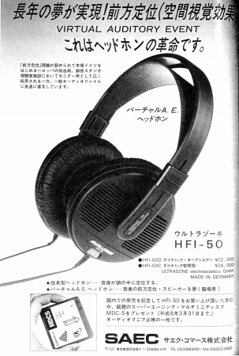
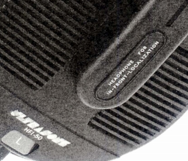
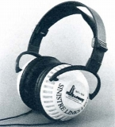
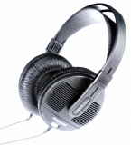
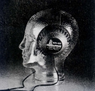

ULTRASONE（ウルトラゾーネ）
1991年創設のドイツのヘッドフォンメーカー。日本での当初の代理店はサエク・コマース(*)。「S-Logic」と呼ばれるドライバーをセンターから意図的にオフセットした位置に組み込む技術を全機種に搭載しているのが特徴。最近までの代理店、タイムロードに変わってからメジャーブランドとなった。2019年3月より、アユートが代理店となったようだ。「S-Logic」についても当初は「空間聴覚効果」とか「バーチャルA.(AUDITORY)E.(EVENT)」、「前方定位理論」とか抽象的な説明がなされており、明確なブランドイメージが確立したのは今世紀になってからであった。


（1995年のHFI-50の広告。「HEADPHONE FOR IN-FRONT-LOCALZATION」と記されているのがわかる。ロゴも現行とは違う。）
＊現時点で判明する限りでは、当サイトで紹介する4モデル以外にサエク・コマース時代に扱われたウルトラゾーネ製品にはHFI-2000（2001年）とHFI-600（2002年）がある。この2機種についてはサイト開設時の代理店、タイムロードの「旧モデル情報 」欄に記載されていなかったので映像のみ、のせておく。
当初紹介されたのがHFI-100。このブランド全体でも最初の製品である。インタビュー等では6万円ほどのモデルとされるが、国内販売価格は10万円を超える高額モデルだった。なおヘットバンドはベイヤーの旧型などと共通と思われるもの。当初から外装部品についてはあまりこだわらない姿勢を見せている。

(HFI-100)
HFI-100に代わり登場したのがHFI-50で、ノーマルなオープンエア型の他に、密閉タイプのHFI-50Cもあった。このモデルヘッドバンド及びカプセルはゼンハイザーのHD-540reference�UやHD-530�Uを思わせる。

(HFI-50)
HFI-50と一緒に雑誌で簡単な紹介があったのがサラウンドヘッドフォンであるHFI-3D。このモデルは管理人所有のHFI-50を記載したカタログには記載されておらず、現時点では価格と簡単な構造しかわからない。しかしフロント用ユニットはHFI-50と同じ位置にオフセットされている。

(HFI-3D)